1.CC客户端安装
在已安装CC客户端的Windows机器上进行操作。
2.Git客户端安装
完成Git客户端的安装，按照安装步骤一步一步完成安装操作即可。
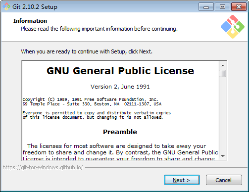
3.Python2.7环境安装
WIDNOWS安装包下载地址：
https://mirrors.huaweicloud.com/python/2.7/python-2.7.msi
其他版本https://mirrors.huaweicloud.com/python/2.7 下自行查找。
配置环境变量（可选，图例中python安装目录为C:\python27）：
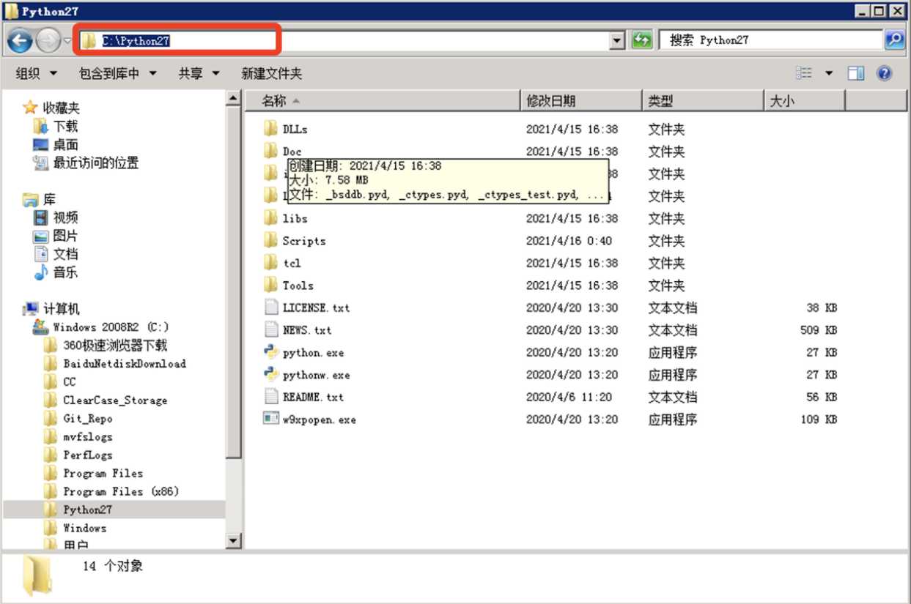
将python的路径写入环境变量中，并在windows的PATH环境变量配置命令行所在路径。
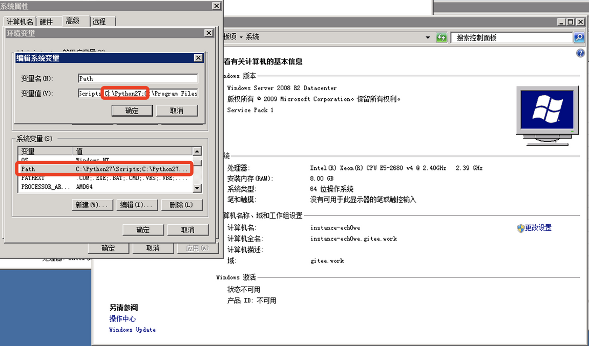
环境变量配置好之后，windows cmd 运行python 输出如下图表示python安装成功。
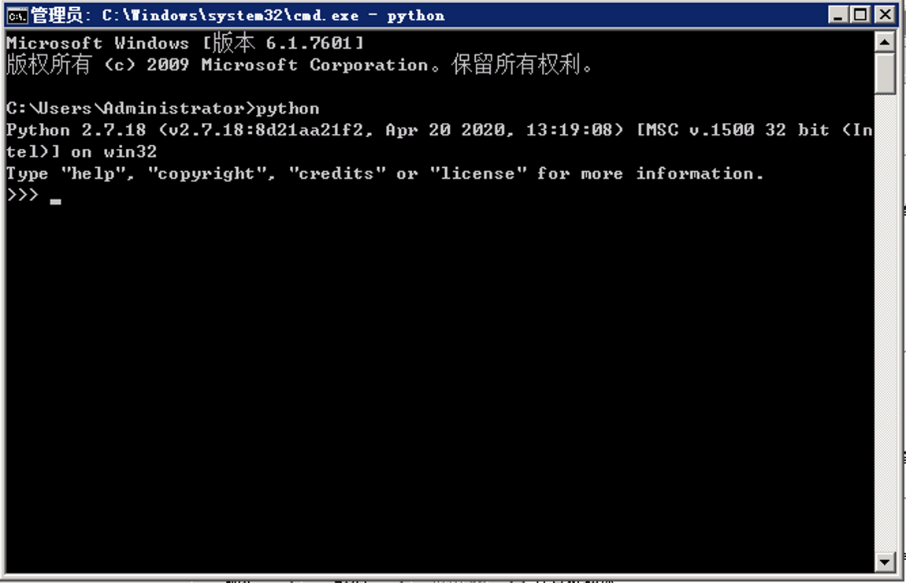
4.迁移工具包获取
工具包地址：git@gitee.com:stephenzzz/cc-migrate-git-tools.git
安装 git-cc 安装包
解压git-cc安装包
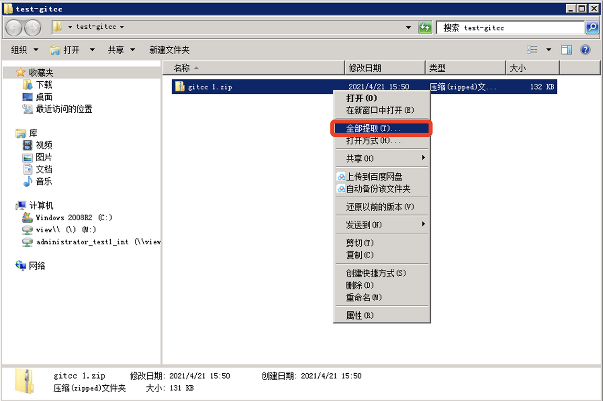
指定安装目录：
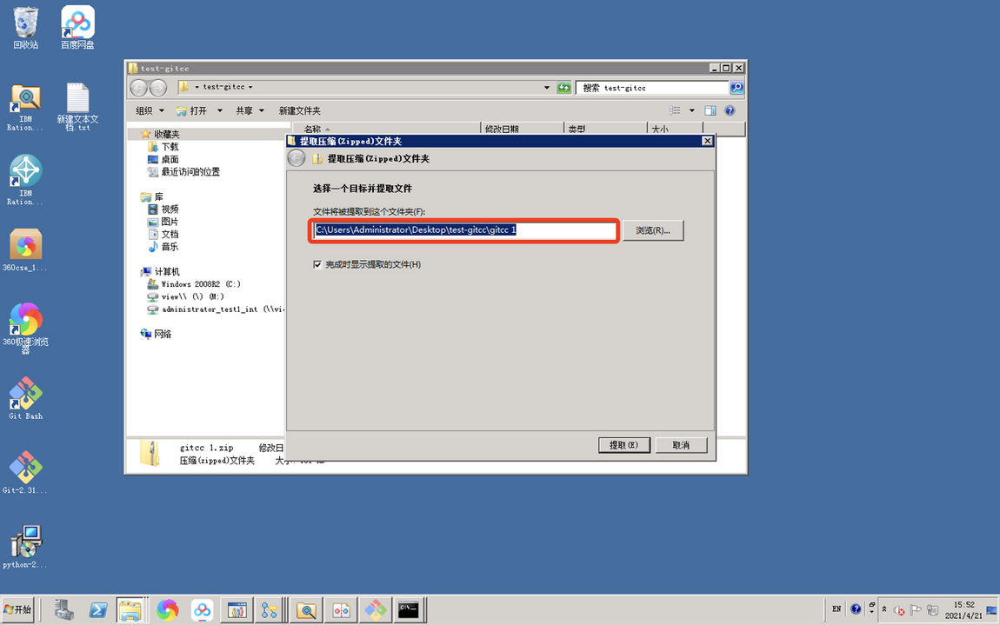
cmd 进入 gitcc 安装目录：
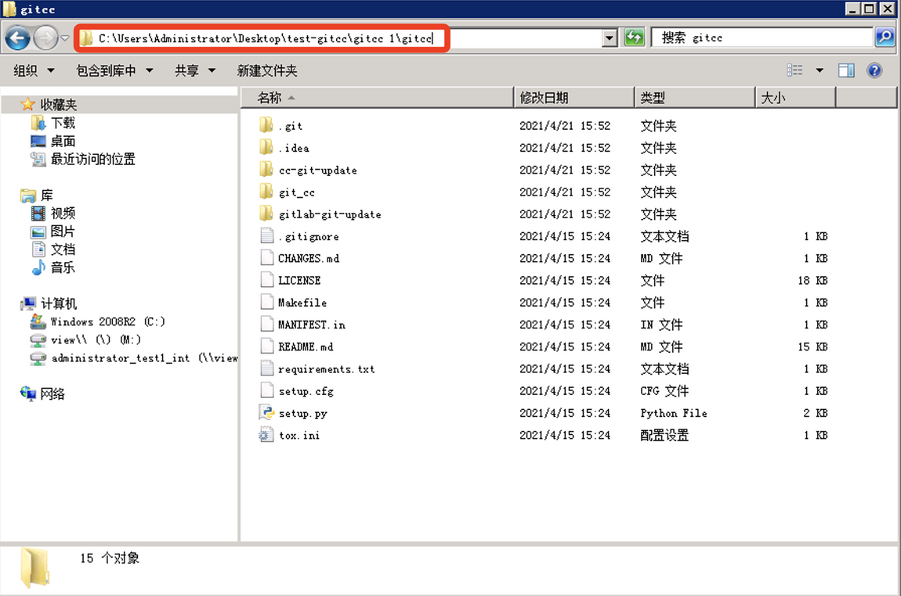
cd C:\\Users\\Administrator\\Desktop\\test-gitcc\\gitcc 1\\gitccc
# python -m pip
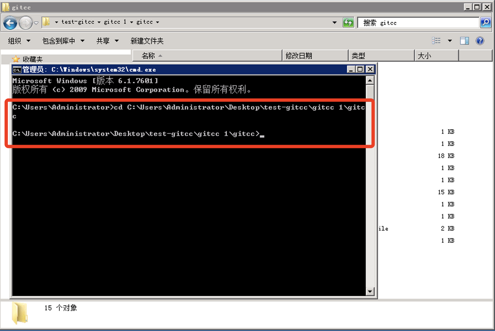
python -m pip install .
如下图 输出 ：Successfully installed git-cc-1.0.1.dev0
git-cc 安装成功
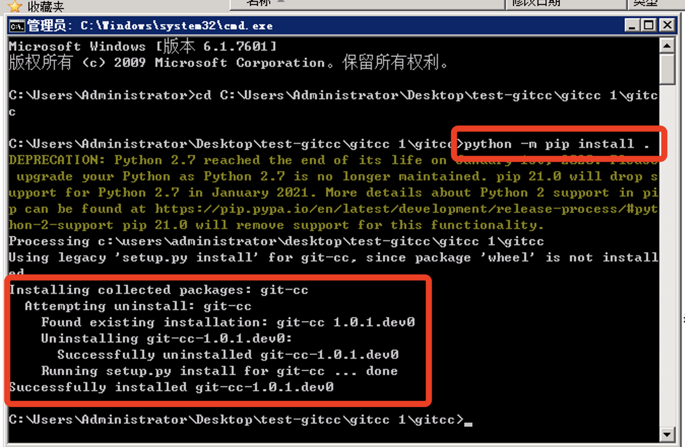
gitcc安装的目录图例中安装到python的目录。
配置git-cc环境变量
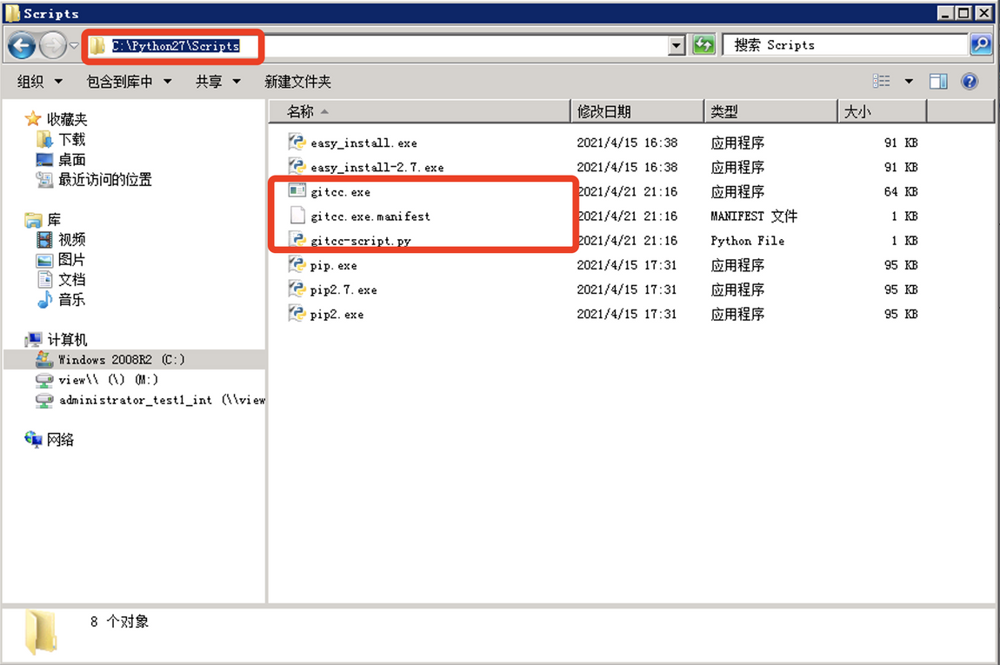
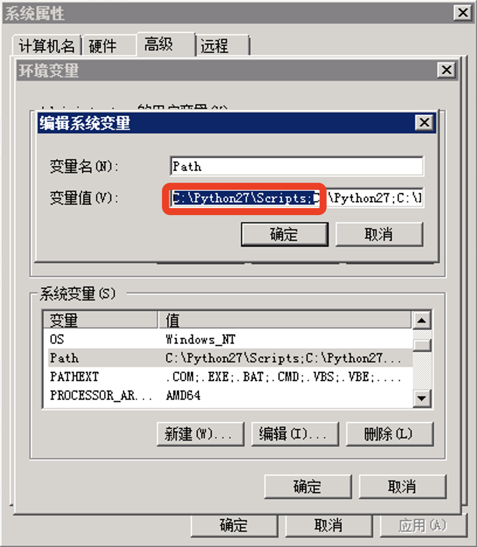
至此ClearCase迁移Git环境搭建完成。